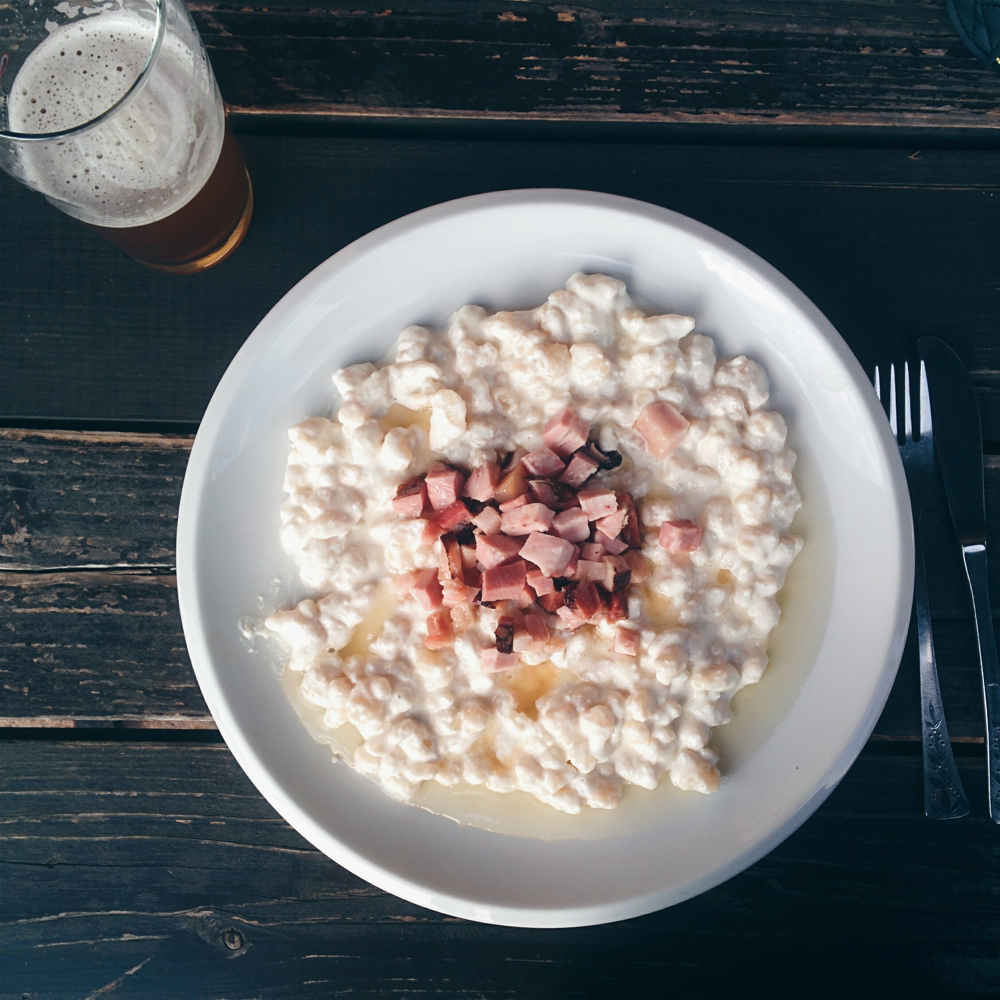

Wok oder Pfanne?
Für asiatische Gerichte und schnelles Rührbraten:
Wok ist die bessere Wahl.
Für westliche Küche, Fleisch, Eier, Soßen &
Alltagsgebrauch:
Pfanne ist vielseitiger und einfacher zu handhaben.
Ideal: Wenn du gerne kochst, lohnt es sich, beides zu haben Wok für spezielle Gerichte,
Pfanne
für
den Alltag.